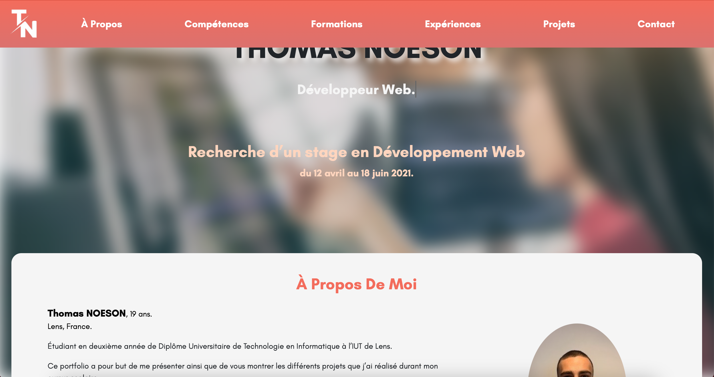

Portfolio
IUT de Lens, Novembre 2020 - Décembre 2020
Projet personnel
Lors du troisième semestre, nous avons comme suggestion de réaliser un portfolio.
Le but de ce projet est de me présenter mais aussi de montrer mes compétences.
Pour la création j'ai utilisé les langages HTML, CSS et JavaScript ainsi que le framework Bootstrap.
